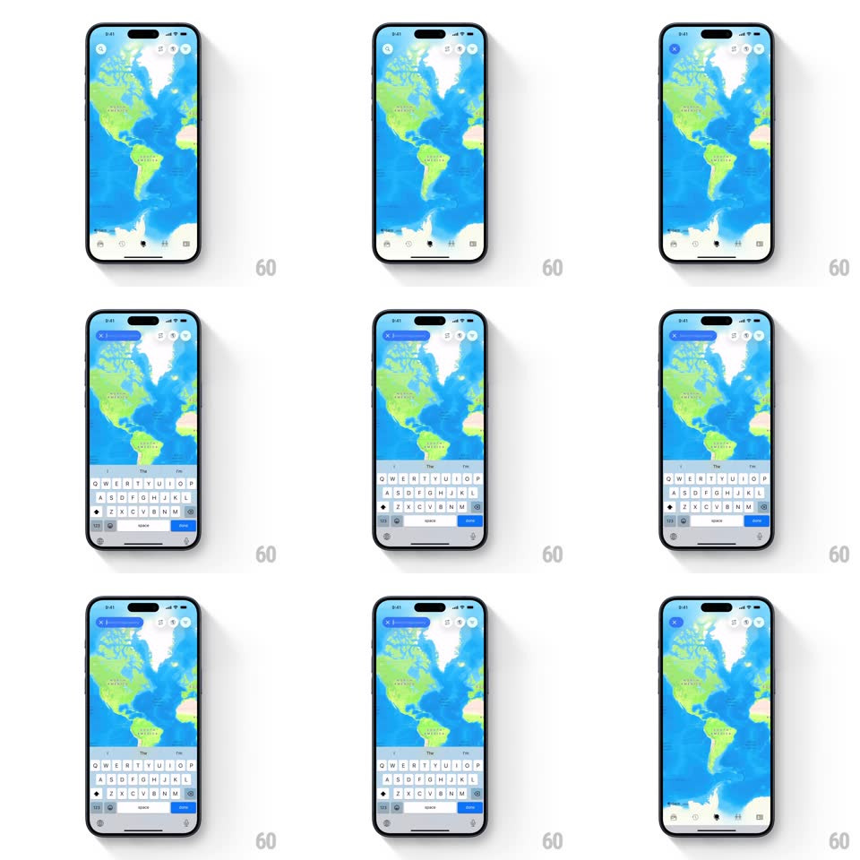

Media
Frame-by-frame

Rebuild this interaction 1:1: Globetrotter's map search - the circular search icon morphs into a full-width input bar while the keyboard rises to meet it and the map recedes.

Rebuild this interaction 1:1: Globetrotter's map search - the circular search icon morphs into a full-width input bar while the keyboard rises to meet it and the map recedes. ## Integration Integration: stack-agnostic spec - springs given as stiffness/damping, timed motions as duration + curve; map every value to your framework and animation library of choice. ## Scene A full-screen stylized world map (blue oceans, green land) with floating circular icon buttons top-left and top-right. Tapping search morphs that circle into a rounded blue input bar with clear/cancel, as the keyboard slides up and the map dims. ## Motion spec Pattern: icon-to-bar morph. - Tap the search circle: it expands horizontally into the input bar (width spring ~380/24 over 250ms) while its background fills blue and the magnifier glyph morphs into the text caret; a clear "x" and divider fade in (150ms, delayed 100ms). - Simultaneously: the keyboard slides up from the bottom (matching the morph's timing so bar and keyboard arrive together), the map scales back subtly (1 to 0.97) and dims 15%, and the other floating buttons fade to 40% and drift outward 8px. - Typing: each character pops in (scale 1.2 to 1, 100ms); the clear button enables with a quick fill sweep. - Cancel/clear: the bar contracts back into the circle (reverse morph, 250ms) as the keyboard drops; the map restores brightness and scale; neighboring buttons fade back. - Suggestion rows, when present, stagger in under the bar (translateY 8px + fade, 40ms apart), sliding with the keyboard's top edge. ## Calibration - The morph must be geometrically continuous: the circle's left edge is the bar's left edge; it grows rightward only. - Bar and keyboard finish on the same frame - a lagging keyboard breaks the illusion. ## Reduced motion Circle crossfades to bar; keyboard slides at default speed. ## Don't miss - The bar is blue (brand) with white text - it reads as a search field only once expanded; before that it's purely an icon. - The map stays interactive underneath only after cancel; while searching it is inert backdrop.